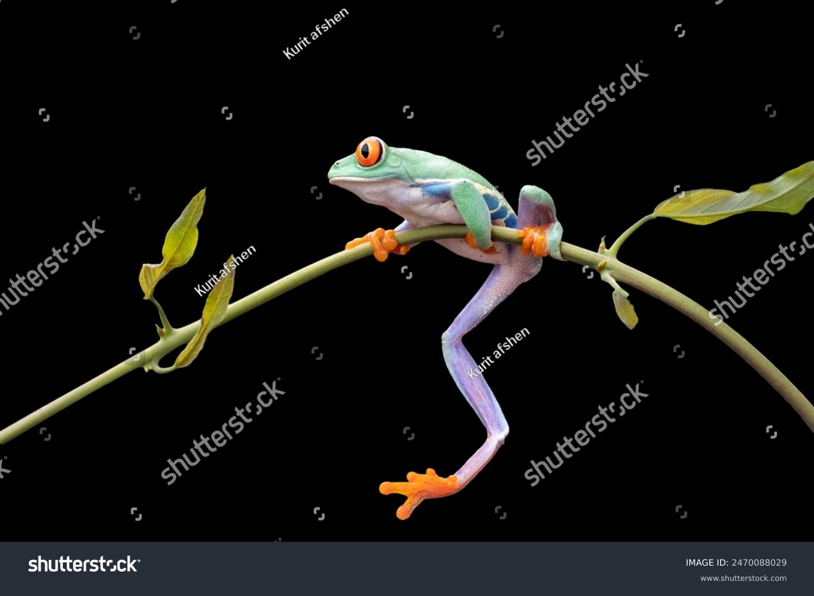

Khulna Government Model School and College (KGMSC) is one of the most prestigious and rapidly growing educational institutions in Khulna, Bangladesh. Known for academic excellence, disciplined learning, and modern education systems,KGMSC stands as a symbol of quality education under the government education framework.
At Khulna Government Model School and College, we believe that education is not just about textbooks and exams—it is about shaping responsible citizens, skilled leaders, and morally strong individuals. Our institution provides a balanced learning environment where academic success, character building, creativity, and co-curricular activities go hand in hand.
With experienced teachers, modern facilities, and a student-friendly campus, KGMSC is committed to nurturing young minds from school level to college level with care, discipline, and innovation.
KGMSC (Khulna Government Model School and College) was established with a clear vision: to deliver high-quality education that meets both national and global standards. As a government institution, we follow the curriculum approved by the Ministry of Education while also focusing on modern teaching methods and digital learning.
Located in the heart of Khulna city, Khulna Government Model School and College provides easy access for students from different areas of Khulna. Our campus is designed to create a peaceful and inspiring environment that supports effective learning.
Over the years, KGMSC has gained a strong reputation for:
1.Excellent academic results
2.Disciplined learning environment
3.Active participation in cultural and academic competitions
4.Strong moral and ethical education
The mission of Khulna Government Model School and College (KGMSC) is to ensure inclusive, quality, and value-based education for every student. We aim to develop students who are academically strong, morally responsible, and socially aware.
Our mission includes:
1.Providing quality education aligned with national standards
2.Encouraging critical thinking and creativity
3.Building strong moral values and discipline
4.Preparing students for higher education and future careers
5.Promoting leadership, teamwork, and social responsibility
The vision of KGMSC is to become a leading government educational institution in Bangladesh by producing skilled, confident, and responsible citizens.
We envision:
1.A modern education system supported by technology
2.Students who excel academically and ethically
3.A learning environment that encourages innovation and curiosity
4.Strong collaboration between teachers, students, and parents
Khulna Government Model School and College strives to prepare students not only for exams but for real-life challenges
Academic excellence is the core strength of KGMSC. Our institution follows a structured academic system that focuses on understanding, application, and performance.
Key Academic Features:
1.Qualified and experienced teachers
2.Well-planned lesson structures
3.Regular assessments and evaluations
4.Student-friendly teaching methods
5.Extra academic support for weak students
From primary classes to higher secondary level, Khulna Government Model School and College ensures a strong academic foundation for every learner.
At KGMSC, we understand the importance of modern education. Therefore, we integrate technology with traditional teaching methods to make learning effective and engaging.
Our modern learning environment includes:
1.Multimedia classrooms
2.Science laboratories
3.Computer labs
4.Library with academic resources
5.Clean and disciplined classrooms
These facilities help students gain practical knowledge along with theoretical learning.
Education at Khulna Government Model School and College goes beyond academics. We strongly encourage students to participate in co-curricular and extracurricular activities to develop confidence and leadership skills.
Activities include:
1.BNCC (Bangladesh National Cadet Corps)
2.Scout programs
3.Debating Club
4.Science Club
5.Computer Club
6.Cultural Club
These activities help students improve communication skills, teamwork, creativity, and discipline.
Discipline is one of the core values of KGMSC. We maintain a strict but student-friendly discipline system to ensure a safe and respectful learning environment.
Our discipline policy focuses on:
1.Respect for teachers and peers
2.Punctuality and responsibility
3.Honesty and integrity
4.Cleanliness and good behavior
At Khulna Government Model School and College, moral education is considered as important as academic success.
There are many reasons why parents and students choose KGMSC as their preferred educational institution in Khulna.
Why KGMSC?
1.Government-recognized institution
2.Strong academic performance
3.Qualified teaching staff
4.Modern facilities
5.Focus on discipline and values
6.Safe and supportive environment
7.Affordable education
Khulna Government Model School and College is committed to providing equal learning opportunities for all students.
At KGMSC, students are at the center of everything we do. Our teachers guide students with care, patience, and dedication.
We focus on:
1.Individual student development
2.Encouraging questions and creativity
3.Building confidence and communication skills
4.Supporting students emotionally and academically
This student-centered approach helps learners grow into confident and capable individuals.
Teachers are the backbone of Khulna Government Model School and College. Our teaching staff is highly trained, experienced, and dedicated to student success.
Teachers at KGMSC:
1.Follow modern teaching strategies 2.Provide individual attention 3.Encourage participation and discussion 4.Act as mentors and guides
Their dedication ensures a high standard of education across all classes.
KGMSC believes that education is a shared responsibility between the institution, parents, and the community.
We maintain:
1.Regular communication with parents
2.Parent-teacher meetings
3.Academic progress updates
4.Supportive school-parent relationships
This collaboration helps students perform better academically and socially.
The goal of Khulna Government Model School and College is to prepare students for higher education and future challenges.
We focus on:
1.Academic readiness
2.Career awareness
3.Ethical decision-making
4.Leadership development
Our graduates carry the values and skills learned at KGMSC throughout their lives.
As a government institution, KGMSC is fully committed to maintaining transparency, accountability, and quality education.
We continuously work to:
1.Improve teaching standards
2.Upgrade facilities
3.Introduce modern learning tools br
4.Support student development
Khulna Government Model School and College remains dedicated to excellence in education.
Khulna Government Model School and College (KGMSC) is more than just an educational institution—it is a place where dreams begin and futures are built. With a strong academic foundation, disciplined environment, and focus on holistic development, KGMSC continues to shape the leaders of tomorrow.
If you are looking for a trusted, government-approved, and quality educational institution in Khulna, Khulna Government Model School and College is the right choice.